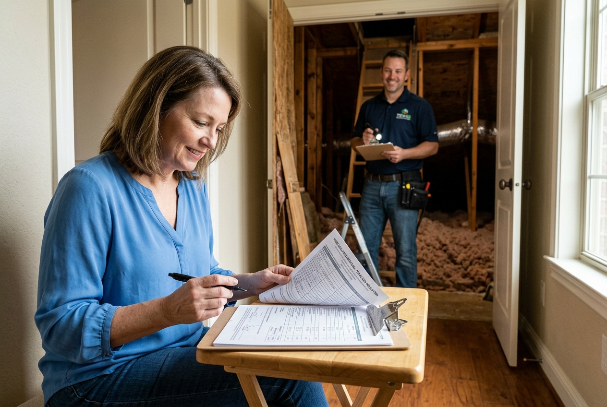

Blown-in insulation lasts 20 to 30 years under normal conditions. In Houston TX, humidity and heat accelerate settling. Homes built in the 1980s or 1990s with original insulation are almost always below R-20 by now and due for an upgrade.
Attic Insulation Houston TX
Most Houston TX homes were built with R-11 to R-19 attic insulation — well below the R-38 minimum Harris County requires today. If your AC runs all day and upstairs rooms stay hot, the attic is usually the reason. As a fully insured insulation company in Houston TX, we install, remove, and upgrade attic insulation — starting with a free attic walkthrough and a written estimate before any work begins.
01
Fully Insured Contractor
02
Written Estimate Before Any Work
03
Confirmed Arrival Window
Houston Insulation Services
Most Houston TX homes need more than one type of insulation work. A home that needs blown-in on the attic floor may also need air sealing at the penetration points, injection foam insulation in older brick walls, or a ventilation check before the heat problem is fully solved. Here's what we offer, and how we decide what your home needs.
 Spray Foam Insulation Houston TX
Spray foam seals air gaps and adds R-value in one step. Open cell is used for attic floors and interior walls. Closed cell is denser and used on roof decks and in areas where moisture resistance is needed.
Explore →
Spray Foam Insulation Houston TX
Spray foam seals air gaps and adds R-value in one step. Open cell is used for attic floors and interior walls. Closed cell is denser and used on roof decks and in areas where moisture resistance is needed.
Explore →
 Injection Foam Insulation Houston
Injection foam is installed into existing wall cavities through small holes without removing drywall. It is used in finished walls where blown-in or batt insulation is not an option.
Explore →
Injection Foam Insulation Houston
Injection foam is installed into existing wall cavities through small holes without removing drywall. It is used in finished walls where blown-in or batt insulation is not an option.
Explore →
 Blown-In Attic Insulation Houston
The most common upgrade for Houston TX homes. Blown-in fiberglass covers the full attic floor evenly, fills around obstructions, and brings most homes from under R-20 to R-38 in a single visit.
Explore →
Air Sealing Houston
Air sealing closes gaps around penetrations, attic hatches, recessed lights, and HVAC boots before insulation is installed. Without it, insulation alone does not stop conditioned air from escaping.
Blown-In Attic Insulation Houston
The most common upgrade for Houston TX homes. Blown-in fiberglass covers the full attic floor evenly, fills around obstructions, and brings most homes from under R-20 to R-38 in a single visit.
Explore →
Air Sealing Houston
Air sealing closes gaps around penetrations, attic hatches, recessed lights, and HVAC boots before insulation is installed. Without it, insulation alone does not stop conditioned air from escaping.
 Attic Fan Installation Houston
An attic fan moves heat out of a vented attic using sunlight only — no added electricity cost. It pairs well with a blown-in job to address both the insulation gap and the ventilation problem at the same time.
Attic Fan Installation Houston
An attic fan moves heat out of a vented attic using sunlight only — no added electricity cost. It pairs well with a blown-in job to address both the insulation gap and the ventilation problem at the same time.
 Attic Insulation Removal Houston TX
Pest-contaminated, water-damaged, or heavily compacted insulation has to come out before new material goes in. Adding new blown-in over damaged insulation does not solve the problem. We check and photograph the existing condition during the free walkthrough.
Attic Insulation Removal Houston TX
Pest-contaminated, water-damaged, or heavily compacted insulation has to come out before new material goes in. Adding new blown-in over damaged insulation does not solve the problem. We check and photograph the existing condition during the free walkthrough.
Why Houston Homes Need Better Attic Insulation
Attic insulation directly affects how much you pay to cool your home in Houston. Most Houston TX homes built in the 1980s and 1990s along the US-290 and SH-249 corridors were installed with R-11 to R-19 insulation, and today's minimum for Harris County is R-38. That gap means your AC is working harder than it needs to every summer. Hurricanes Ike and Harvey made it worse in many homes — insulation that absorbed moisture loses R-value and can hold mold for years without any visible sign.
Signs Your Houston Attic Needs Attention
Upstairs rooms that stay hot even when the AC is running, AC units cycling on and off more than usual through July and August, dust coming through vents, rodent droppings, or a musty smell when you open the attic hatch. Any one of these is worth a free walkthrough. Most Houston TX homeowners who call us find their attic insulation is either well below R-20, moisture-damaged, or both.
How do you know when attic insulation needs replacing in Houston TX?
Check for bare or thin insulation in the attic, hot rooms on the top floor, high cooling bills compared to neighbors in similar homes, or any history of roof leaks or flooding. If the home was built in the 1980s or 1990s and the insulation has never been replaced, it likely needs upgrading.
What R-Value Does a Houston Attic Need?
Most Houston TX attics need R-38 at minimum. Harris County falls in IECC Climate Zone 2A, and the U.S. Department of Energy recommends R-38 to R-60 for attic floors in this zone. Most homes built in the 1980s or 1990s measure R-11 to R-19 after decades of settling. Some homeowners go to R-49 on homes with large south or west-facing roof sections where the heat load is highest.
How much attic insulation does a Houston TX home need?
R-38 is the current minimum for Harris County per IECC Climate Zone 2A. If your Houston attic measures below R-20, upgrading to R-38 will reduce the heat load on your AC and lower monthly cooling costs. R-49 is worth considering for homes with large south or west-facing roof areas.
Attic Insulation Removal in Houston, TX
Wet insulation, rodent damage, or material compressed past the point where it holds R-value needs to come out before anything new goes in. Our insulation removal in Houston TX includes vacuuming out old material, removing contaminated insulation, and treating the attic before reinstalling. Many Houston TX homes built in the 1980s or 1990s that have never had insulation work fall into at least one of these categories.
01
When Removal Is Needed Before Re-Insulation
Old insulation that looks intact from the hatch can still be a problem. Moisture from a roof leak or Harvey-era flooding compresses the insulation and drops its R-value. Rodent activity leaves droppings and nesting material that hold bacteria. Blown-in vermiculite from pre-1980s homes may contain asbestos. We check for all of these during the free inspection before we quote any removal job.
02
What Attic Insulation Removal Costs in Houston TX
Removal in Houston TX is priced by attic square footage and the depth of existing material. A 1,500 sq ft attic with 6 inches of old blown-in typically runs $1,200 to $2,000 for removal and disposal. Contaminated material costs more. We give you an itemized written estimate before any work starts.
Attic Insulation Cost in Houston, TX
Attic insulation cost in Houston TX runs $0.90 to $1.50 per square foot for a blown-in top-off job. If old insulation needs to come out first, expect $1.80 to $2.80 per square foot combined for removal and reinstall. Spray foam at penetration points is priced separately. Most attic insulation jobs in Houston TX fall between $1,800 and $4,500 total depending on size and scope. You get a written, itemized estimate before any work begins.
| Service | Cost per sq ft |
|---|---|
| Blown-in insulation (top-off) | $0.90 to $1.50 |
| Blown-in insulation (with removal) | $1.80 to $2.80 |
| Spray foam (open cell) | $1.50 to $2.50 |
| Spray foam (closed cell) | $3.00 to $5.00 |
| Old insulation removal only | $1.00 to $1.50 |
What Affects Attic Insulation Cost in Houston TX
Three things drive the price of home insulation in Houston TX: attic square footage, how much existing material needs to be removed or built over, and which products the job requires. A straight top-off costs the least. A job that needs contaminated material removed, the attic treated, and spray foam at penetration points before blown-in goes in costs more. We quote each line item separately.
Is Attic Insulation Worth It in Houston TX?
For most Houston TX homes, yes. A home running R-11 to R-19 through a Houston summer pays more each month to cool the same space than a home at R-38. Most homeowners see lower cooling bills within the first billing cycle after the upgrade. The payback period depends on your current insulation level, attic size, and how much your AC runs.

How Our Attic Insulation Process Works
Every job starts with a free attic inspection. We measure current R-value, check for moisture damage, rodent activity, and air leaks at penetration points, and give you a written report with a line-item estimate before any work is scheduled. Written quote valid for 30 days — schedule whenever you're ready. On install day, we complete the job in a single visit for most Houston TX attics.
01
Written Estimate Before Any Work
The estimate lists every item: removal if needed, air sealing, insulation material, target R-value, and labor. Nothing is added on the day of the job without your approval.
02
Install Day in Houston
We set up floor protection, run the blower hose to the attic, and work to the depth specified in your estimate. We measure and confirm finished R-value before we leave.
Attic Insulation FAQs — Houston TX Homeowners
These are the questions Houston TX homeowners ask most before scheduling an inspection. If yours is not here, ask us directly and we will answer it before you book.
Insulation slows heat transfer but does not control humidity on its own. Air sealing at the penetration points reduces the amount of humid outside air entering the attic. Together, insulation plus air sealing reduce both heat load and moisture infiltration.
Most Houston TX attic jobs take half a day. A 1,500 sq ft attic with a straight blown-in top-off is typically done in 3 to 4 hours. Jobs that include removal or spray foam at the penetration points take longer.
You do not need to leave. We work in the attic with the hatch open. There is dust involved during blown-in installation, so if anyone in the home has respiratory sensitivities, staying out during the job is a reasonable precaution.
Most Houston TX homeowners save $80–$150 per month on cooling bills after upgrading attic insulation to R-38. The exact savings depend on current R-value, home size, and AC runtime. A home going from R-11 to R-38 typically sees the difference within the first billing cycle after the upgrade.
Blown-in fiberglass is the best attic insulation for most Houston TX homes. It installs quickly, fills around obstructions, and brings most attics from under R-20 to R-38 in one visit. Closed-cell spray foam is the better choice for roof decks and areas where moisture resistance matters. The right answer depends on your attic type, current R-value, and whether air sealing is also needed.
Attic Insulation Service Area — Greater Houston, TX
We are an insulation contractor in Houston TX based in Cypress. We serve homeowners across Greater Houston including Cypress, Spring, Conroe, Kingwood, The Woodlands, and Humble. Most jobs are scheduled within the same week.